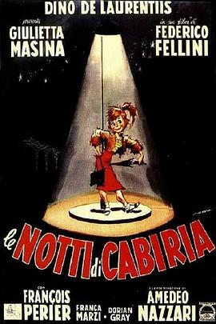

卡比利亚之夜 / Le notti di Cabiria
又名：花街春梦(港) / 卡比莉亚之夜(台) / 她在黑夜中 / 卡比里亚之夜 / 一个女人的夜晚 / Nights of Cabiria
作品信息
| 导演 | 费德里科·费里尼 |
| 编剧 | 费德里科·费里尼 / 恩尼奥·弗拉亚诺 / 图里奥·皮内利 / 皮埃尔·保罗·帕索里尼 / 布鲁内洛·龙迪 |
| 主演 | 朱丽叶塔·马西纳 / 弗朗索瓦·佩里埃 / 弗兰卡·马尔齐 / 多里安·格雷 / 阿尔多·西尔瓦尼 / 恩尼奥·吉罗拉米 / 马里奥·帕桑特 / 克里斯蒂安·塔索斯 / 阿梅德奥·纳扎里 / 詹尼·巴吉诺 / 佛朗哥·巴尔杜奇 / Ciccio Barbi / Luciano Bonanni / Jusy Boncinelli / Loretta Capitoli / Leo Catozzo / 多米尼克·德卢什 / Edda Evangelista / 佛朗哥·法布里齐 / 里卡尔多·费里尼 |
| 类型 | 剧情 |
| 制片国家/地区 | 意大利 / 法国 |
| 语言 | 意大利语 |
| 上映日期 | 1957-05-11(戛纳电影节) / 1957-10-03(意大利) |
| 片长 | 110分钟 / 117分钟(修复版) |
| IMDb | tt0050783 |
说过什么
2023-10-31 22:58:13
广播 · 想看
最后一次看到是 2026-10-07T23:15:52+08:00 · 豆瓣原页